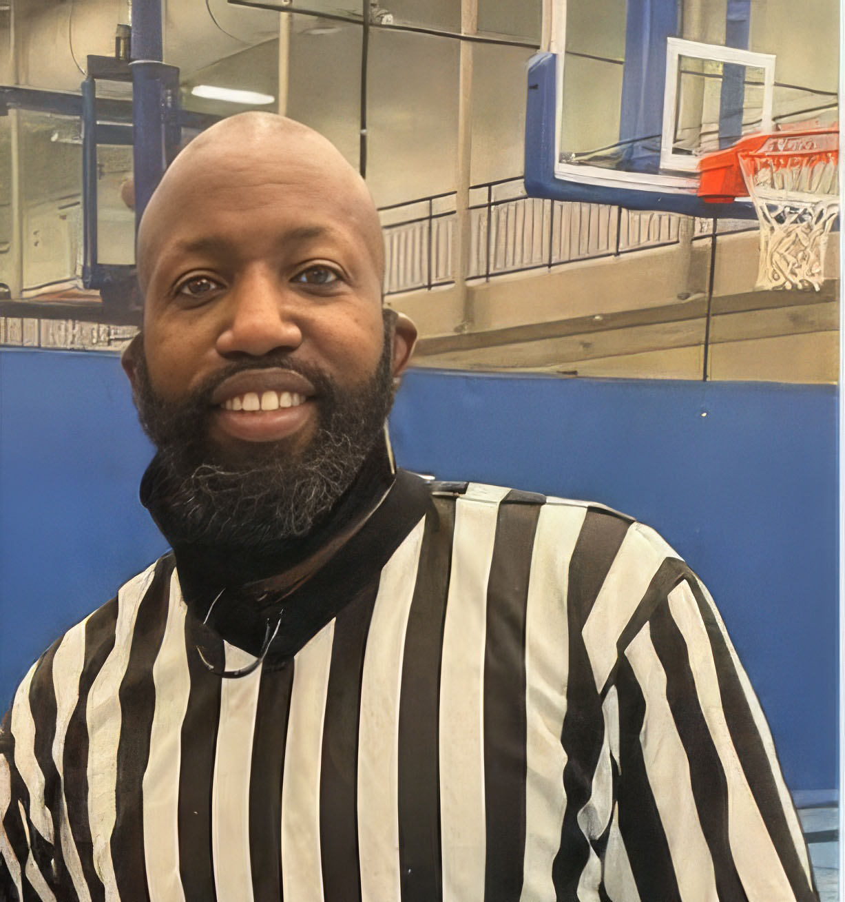

Carlton White
- Assigning: Acts as the Primary Assignor for Slowpitch Softball and works collaboratively with Zach and Heidi on assignments for other sports.
- Training & Development: Oversees the education and mentorship of new referees and coordinates all official training clinics.
- Conflict Resolution: Serves as the designated lead for mediating and resolving all on- and off-field disputes.
More about Carlton
Carlton is a seasoned official with extensive experience in both adult and youth sports leagues. He is a familiar and respected presence on the court and field, officiating basketball, volleyball, and slowpitch softball.
Known for his charismatic personality and collaborative spirit, Carlton excels at building strong relationships with fellow officials, coaches, and league partners.
This positive approach, combined with a genuine passion for mentorship, makes him a natural leader in recruiting and training new officials to help them succeed.
When he is not officiating or assigning, Carlton enjoys working out and spending quality time with his son. He also serves his community as a bus driver.